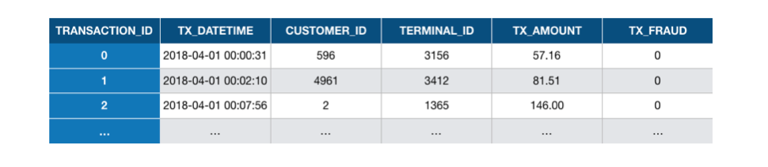

3. Baseline feature transformation¶
The simulated dataset generated in the previous section is simple. It only contains the essential features that characterize a payment card transaction. These are: a unique identifier for the transaction, the date and time of the transaction, the transaction amount, a unique identifier for the customer, a unique number for the merchant, and a binary variable that labels the transaction as legitimate or fraudulent (0 for legitimate or 1 for fraudulent). Fig. 1 provides the first three rows of the simulated dataset:

Fig. 1. The first three transactions in the simulated dataset used in this chapter.
What each row essentially tells us is that, at 00:00:31, on the 1st of April 2018, a customer with ID 596 made a payment of a value of 57.19 to a merchant with ID 3156, and that the transaction was not fraudulent. Then, at 00:02:10, on the 1st of April 2018, a customer with ID 4961 made a payment of a value of 81.51 to a merchant with ID 3412, and that the transaction was not fraudulent. And so on. The simulated dataset is a long list of such transactions (1.8 million in total). The variable transaction_ID is a unique identifier for each transaction.
While conceptually simple for a human, such a set of features is however not appropriate for a machine learning predictive model. Machine learning algorithms typically require numerical and ordered features. Numerical means that the type of the variable must be an integer or a real number. Ordered means that the order of the values of a variable is meaningful.
In this dataset, the only numerical and ordered features are the transaction amount and the fraud label. The date is a Panda timestamp, and therefore not numerical. The identifiers for the transactions, customers, and terminals are numerical but not ordered: it would not make sense to assume for example that the terminal with ID 3548 is ‘bigger’ or ‘larger’ than the terminal with ID 1983. Rather, these identifiers represent distinct ‘entities’, which are referred to as categorical features.
There is unfortunately no standard procedure to deal with non-numerical or categorical features. The topic is known in the machine learning literature as feature engineering or feature transformation and will be covered in Chapter 7. In essence, the goal of feature engineering is to design new features that are assumed to be relevant for a predictive problem. The design of these features is usually problem-dependent, and involves domain knowledge.
In this section, we will implement three types of feature transformation that are known to be relevant for payment card fraud detection.
The first type of transformation involves the date/time variable, and consists in creating binary features that characterize potentially relevant periods. We will create two such features. The first one will characterize whether a transaction occurs during a weekday or during the weekend. The second will characterize whether a transaction occurs during the day or the night. These features can be useful since it has been observed that fraudulent patterns differ between weekdays and weekends, and between the day and night.
The second type of transformation involves the customer ID and consists in creating features that characterize the customer spending behaviors. We will follow the RFM (Recency, Frequency, Monetary value) framework proposed in [VVBC+15], and keep track of the average spending amount and number of transactions for each customer and for three window sizes. This will lead to the creation of six new features.
The third type of transformation involves the terminal ID and consists in creating new features that characterize the ‘risk’ associated to the terminal. The risk will be defined as the average number of frauds that were observed on the terminal for three window sizes. This will lead to the creation of three new features.
The table below summarizes the types of transformation that will be performed and the new features that will be created.
Original feature name |
Original feature type |
Transformation |
Number of new features |
New feature(s) type |
|---|---|---|---|---|
TX_DATE_TIME |
Panda timestamp |
0 if transaction during a weekday, 1 if transaction during a weekend. The new feature is called TX_DURING_WEEKEND. |
1 |
Integer (0/1) |
TX_DATE_TIME |
Panda timestamp |
0 if transaction between 6am and 0pm, 1 if transaction between 0pm and 6am. The new feature is called TX_DURING_NIGHT. |
1 |
Integer (0/1) |
CUSTOMER_ID |
Categorical variable |
Number of transactions by the customer in the last n day(s), for n in {1,7,30}. The new features are called CUSTOMER_ID_NB_TX_nDAY_WINDOW. |
3 |
Integer |
CUSTOMER_ID |
Categorical variable |
Average spending amount in the last n day(s), for n in {1,7,30}. The new features are called CUSTOMER_ID_AVG_AMOUNT_nDAY_WINDOW. |
3 |
Real |
TERMINAL_ID |
Categorical variable |
Number of transactions on the terminal in the last n+d day(s), for n in {1,7,30} and d=7. The parameter d is called delay and will be discussed later in this notebook. The new features are called TERMINAL_ID_NB_TX_nDAY_WINDOW. |
3 |
Integer |
TERMINAL_ID |
Categorical variable |
Average number of frauds on the terminal in the last n+d day(s), for n in {1,7,30} and d=7. The parameter d is called delay and will be discussed later in this notebook. The new features are called TERMINAL_ID_RISK_nDAY_WINDOW. |
3 |
Real |
The following sections provide the implementation for each of these three transformations. After the transformations, a set of 14 new features will be created. Note that some of the features are the result of aggregation functions over the values of other features or conditions (same customer, given time window). These features are often referred to as aggregated features.
# Initialization: Load shared functions and simulated data
# Load shared functions
!curl -O https://raw.githubusercontent.com/Fraud-Detection-Handbook/fraud-detection-handbook/main/Chapter_References/shared_functions.py
%run shared_functions.py
# Get simulated data from Github repository
if not os.path.exists("simulated-data-raw"):
!git clone https://github.com/Fraud-Detection-Handbook/simulated-data-raw
% Total % Received % Xferd Average Speed Time Time Time Current
Dload Upload Total Spent Left Speed
100 31567 100 31567 0 0 135k 0 --:--:-- --:--:-- --:--:-- 135k
Cloning into 'simulated-data-raw'...
remote: Enumerating objects: 189, done.
remote: Counting objects: 100% (189/189), done.
remote: Compressing objects: 100% (187/187), done.
remote: Total 189 (delta 0), reused 186 (delta 0), pack-reused 0
Receiving objects: 100% (189/189), 28.04 MiB | 3.13 MiB/s, done.
3.1. Loading of dataset¶
Let us first load the transaction data simulated in the previous notebook. We will load the transaction files from April to September. Files can be loaded using the read_from_files function in the shared functions notebook. The function was put in this notebook since it will be used frequently throughout this book.
The function takes as input the folder where the data files are located, and the dates that define the period to load (between BEGIN_DATE and END_DATE). It returns a DataFrame of transactions. The transactions are sorted by chronological order.
DIR_INPUT='./simulated-data-raw/data/'
BEGIN_DATE = "2018-04-01"
END_DATE = "2018-09-30"
print("Load files")
%time transactions_df=read_from_files(DIR_INPUT, BEGIN_DATE, END_DATE)
print("{0} transactions loaded, containing {1} fraudulent transactions".format(len(transactions_df),transactions_df.TX_FRAUD.sum()))
Load files
CPU times: user 3.1 s, sys: 696 ms, total: 3.79 s
Wall time: 4.13 s
1754155 transactions loaded, containing 14681 fraudulent transactions
transactions_df.head()
| TRANSACTION_ID | TX_DATETIME | CUSTOMER_ID | TERMINAL_ID | TX_AMOUNT | TX_TIME_SECONDS | TX_TIME_DAYS | TX_FRAUD | TX_FRAUD_SCENARIO | |
|---|---|---|---|---|---|---|---|---|---|
| 0 | 0 | 2018-04-01 00:00:31 | 596 | 3156 | 57.16 | 31 | 0 | 0 | 0 |
| 1 | 1 | 2018-04-01 00:02:10 | 4961 | 3412 | 81.51 | 130 | 0 | 0 | 0 |
| 2 | 2 | 2018-04-01 00:07:56 | 2 | 1365 | 146.00 | 476 | 0 | 0 | 0 |
| 3 | 3 | 2018-04-01 00:09:29 | 4128 | 8737 | 64.49 | 569 | 0 | 0 | 0 |
| 4 | 4 | 2018-04-01 00:10:34 | 927 | 9906 | 50.99 | 634 | 0 | 0 | 0 |
3.2. Date and time transformations¶
We will create two new binary features from the transaction dates and times:
The first will characterize whether a transaction occurs during a weekday (value 0) or a weekend (1), and will be called
TX_DURING_WEEKENDThe second will characterize whether a transaction occurs during the day or during the day (0) or during the night (1). The night is defined as hours that are between 0pm and 6am. It will be called
TX_DURING_NIGHT.
For the TX_DURING_WEEKEND feature, we define a function is_weekend that takes as input a Panda timestamp, and returns 1 if the date is during a weekend, or 0 otherwise. The timestamp object conveniently provides the weekday function to help in computing this value.
def is_weekend(tx_datetime):
# Transform date into weekday (0 is Monday, 6 is Sunday)
weekday = tx_datetime.weekday()
# Binary value: 0 if weekday, 1 if weekend
is_weekend = weekday>=5
return int(is_weekend)
It is then straghtforward to compute this feature for all transactions using the Panda apply function.
%time transactions_df['TX_DURING_WEEKEND']=transactions_df.TX_DATETIME.apply(is_weekend)
CPU times: user 7.54 s, sys: 247 ms, total: 7.79 s
Wall time: 7.94 s
We follow the same logic to implement the TX_DURING_NIGHT feature. First, a function is_night that takes as input a Panda timestamp, and returns 1 if the time is during the night, or 0 otherwise. The timestamp object conveniently provides the hour property to help in computing this value.
def is_night(tx_datetime):
# Get the hour of the transaction
tx_hour = tx_datetime.hour
# Binary value: 1 if hour less than 6, and 0 otherwise
is_night = tx_hour<=6
return int(is_night)
%time transactions_df['TX_DURING_NIGHT']=transactions_df.TX_DATETIME.apply(is_night)
CPU times: user 7.09 s, sys: 221 ms, total: 7.31 s
Wall time: 7.47 s
Let us check that these features where correctly computed.
transactions_df[transactions_df.TX_TIME_DAYS>=30]
| TRANSACTION_ID | TX_DATETIME | CUSTOMER_ID | TERMINAL_ID | TX_AMOUNT | TX_TIME_SECONDS | TX_TIME_DAYS | TX_FRAUD | TX_FRAUD_SCENARIO | TX_DURING_WEEKEND | TX_DURING_NIGHT | |
|---|---|---|---|---|---|---|---|---|---|---|---|
| 288062 | 288062 | 2018-05-01 00:01:21 | 3546 | 2944 | 18.71 | 2592081 | 30 | 0 | 0 | 0 | 1 |
| 288063 | 288063 | 2018-05-01 00:01:48 | 206 | 3521 | 18.60 | 2592108 | 30 | 0 | 0 | 0 | 1 |
| 288064 | 288064 | 2018-05-01 00:02:22 | 2610 | 4470 | 66.67 | 2592142 | 30 | 0 | 0 | 0 | 1 |
| 288065 | 288065 | 2018-05-01 00:03:15 | 4578 | 1520 | 79.41 | 2592195 | 30 | 0 | 0 | 0 | 1 |
| 288066 | 288066 | 2018-05-01 00:03:51 | 1246 | 7809 | 52.08 | 2592231 | 30 | 0 | 0 | 0 | 1 |
| ... | ... | ... | ... | ... | ... | ... | ... | ... | ... | ... | ... |
| 1754150 | 1754150 | 2018-09-30 23:56:36 | 161 | 655 | 54.24 | 15810996 | 182 | 0 | 0 | 1 | 0 |
| 1754151 | 1754151 | 2018-09-30 23:57:38 | 4342 | 6181 | 1.23 | 15811058 | 182 | 0 | 0 | 1 | 0 |
| 1754152 | 1754152 | 2018-09-30 23:58:21 | 618 | 1502 | 6.62 | 15811101 | 182 | 0 | 0 | 1 | 0 |
| 1754153 | 1754153 | 2018-09-30 23:59:52 | 4056 | 3067 | 55.40 | 15811192 | 182 | 0 | 0 | 1 | 0 |
| 1754154 | 1754154 | 2018-09-30 23:59:57 | 3542 | 9849 | 23.59 | 15811197 | 182 | 0 | 0 | 1 | 0 |
1466093 rows × 11 columns
The 2018-05-01 was a Monday, and the 2018-09-30 a Sunday. These dates are correctly flagged as weekday, and weekend, respectively. The day and night feature is also correctly set for the first transactions, that happen closely after 0 pm, and the last transactions that happen closely before 0 pm.
3.3. Customer ID transformations¶
Let us now proceed with customer ID transformations. We will take inspiration from the RFM (Recency, Frequency, Monetary value) framework proposed in [VVBC+15], and compute two of these features over three time windows. The first feature will be the number of transactions that occur within a time window (Frequency). The second will be the average amount spent in these transactions (Monetary value). The time windows will be set to one, seven, and thirty days. This will generate six new features. Note that these time windows could later be optimized along with the models using a model selection procedure (Chapter 5).
Let us implement these transformations by writing a get_customer_spending_behaviour_features function. The function takes as inputs the set of transactions for a customer and a set of window sizes. It returns a DataFrame with the six new features. Our implementation relies on the Panda rolling function, which makes easy the computation of aggregates over a time window.
def get_customer_spending_behaviour_features(customer_transactions, windows_size_in_days=[1,7,30]):
# Let us first order transactions chronologically
customer_transactions=customer_transactions.sort_values('TX_DATETIME')
# The transaction date and time is set as the index, which will allow the use of the rolling function
customer_transactions.index=customer_transactions.TX_DATETIME
# For each window size
for window_size in windows_size_in_days:
# Compute the sum of the transaction amounts and the number of transactions for the given window size
SUM_AMOUNT_TX_WINDOW=customer_transactions['TX_AMOUNT'].rolling(str(window_size)+'d').sum()
NB_TX_WINDOW=customer_transactions['TX_AMOUNT'].rolling(str(window_size)+'d').count()
# Compute the average transaction amount for the given window size
# NB_TX_WINDOW is always >0 since current transaction is always included
AVG_AMOUNT_TX_WINDOW=SUM_AMOUNT_TX_WINDOW/NB_TX_WINDOW
# Save feature values
customer_transactions['CUSTOMER_ID_NB_TX_'+str(window_size)+'DAY_WINDOW']=list(NB_TX_WINDOW)
customer_transactions['CUSTOMER_ID_AVG_AMOUNT_'+str(window_size)+'DAY_WINDOW']=list(AVG_AMOUNT_TX_WINDOW)
# Reindex according to transaction IDs
customer_transactions.index=customer_transactions.TRANSACTION_ID
# And return the dataframe with the new features
return customer_transactions
Let us compute these aggregates for the first customer.
spending_behaviour_customer_0=get_customer_spending_behaviour_features(transactions_df[transactions_df.CUSTOMER_ID==0])
spending_behaviour_customer_0
| TRANSACTION_ID | TX_DATETIME | CUSTOMER_ID | TERMINAL_ID | TX_AMOUNT | TX_TIME_SECONDS | TX_TIME_DAYS | TX_FRAUD | TX_FRAUD_SCENARIO | TX_DURING_WEEKEND | TX_DURING_NIGHT | CUSTOMER_ID_NB_TX_1DAY_WINDOW | CUSTOMER_ID_AVG_AMOUNT_1DAY_WINDOW | CUSTOMER_ID_NB_TX_7DAY_WINDOW | CUSTOMER_ID_AVG_AMOUNT_7DAY_WINDOW | CUSTOMER_ID_NB_TX_30DAY_WINDOW | CUSTOMER_ID_AVG_AMOUNT_30DAY_WINDOW | |
|---|---|---|---|---|---|---|---|---|---|---|---|---|---|---|---|---|---|
| TRANSACTION_ID | |||||||||||||||||
| 1758 | 1758 | 2018-04-01 07:19:05 | 0 | 6076 | 123.59 | 26345 | 0 | 0 | 0 | 1 | 0 | 1.0 | 123.590000 | 1.0 | 123.590000 | 1.0 | 123.590000 |
| 8275 | 8275 | 2018-04-01 18:00:16 | 0 | 858 | 77.34 | 64816 | 0 | 0 | 0 | 1 | 0 | 2.0 | 100.465000 | 2.0 | 100.465000 | 2.0 | 100.465000 |
| 8640 | 8640 | 2018-04-01 19:02:02 | 0 | 6698 | 46.51 | 68522 | 0 | 0 | 0 | 1 | 0 | 3.0 | 82.480000 | 3.0 | 82.480000 | 3.0 | 82.480000 |
| 12169 | 12169 | 2018-04-02 08:51:06 | 0 | 6569 | 54.72 | 118266 | 1 | 0 | 0 | 0 | 0 | 3.0 | 59.523333 | 4.0 | 75.540000 | 4.0 | 75.540000 |
| 15764 | 15764 | 2018-04-02 14:05:38 | 0 | 7707 | 63.30 | 137138 | 1 | 0 | 0 | 0 | 0 | 4.0 | 60.467500 | 5.0 | 73.092000 | 5.0 | 73.092000 |
| ... | ... | ... | ... | ... | ... | ... | ... | ... | ... | ... | ... | ... | ... | ... | ... | ... | ... |
| 1750390 | 1750390 | 2018-09-30 13:38:41 | 0 | 3096 | 38.23 | 15773921 | 182 | 0 | 0 | 1 | 0 | 5.0 | 64.388000 | 28.0 | 57.306429 | 89.0 | 63.097640 |
| 1750758 | 1750758 | 2018-09-30 14:10:21 | 0 | 9441 | 43.60 | 15775821 | 182 | 0 | 0 | 1 | 0 | 6.0 | 60.923333 | 29.0 | 56.833793 | 89.0 | 62.433933 |
| 1751039 | 1751039 | 2018-09-30 14:34:30 | 0 | 1138 | 69.69 | 15777270 | 182 | 0 | 0 | 1 | 0 | 7.0 | 62.175714 | 29.0 | 57.872414 | 90.0 | 62.514556 |
| 1751272 | 1751272 | 2018-09-30 14:54:59 | 0 | 9441 | 91.26 | 15778499 | 182 | 0 | 0 | 1 | 0 | 8.0 | 65.811250 | 30.0 | 58.985333 | 90.0 | 61.882333 |
| 1751455 | 1751455 | 2018-09-30 15:11:37 | 0 | 2746 | 27.90 | 15779497 | 182 | 0 | 0 | 1 | 0 | 9.0 | 61.598889 | 31.0 | 57.982581 | 91.0 | 61.508901 |
384 rows × 17 columns
We can check that the new features are consistent with the customer profile (see the previous notebook). For customer 0, the mean amount was mean_amount=62.26, and the transaction frequency was mean_nb_tx_per_day=2.18. These values are indeed closely matched by the features CUSTOMER_ID_NB_TX_30DAY_WINDOW and CUSTOMER_ID_AVG_AMOUNT_30DAY_WINDOW, especially after 30 days.
Let us now generate these features for all customers. This is straightforward using the Panda groupby and apply methods.
%time transactions_df=transactions_df.groupby('CUSTOMER_ID').apply(lambda x: get_customer_spending_behaviour_features(x, windows_size_in_days=[1,7,30]))
transactions_df=transactions_df.sort_values('TX_DATETIME').reset_index(drop=True)
CPU times: user 1min 2s, sys: 1.21 s, total: 1min 3s
Wall time: 1min 7s
transactions_df
| TRANSACTION_ID | TX_DATETIME | CUSTOMER_ID | TERMINAL_ID | TX_AMOUNT | TX_TIME_SECONDS | TX_TIME_DAYS | TX_FRAUD | TX_FRAUD_SCENARIO | TX_DURING_WEEKEND | TX_DURING_NIGHT | CUSTOMER_ID_NB_TX_1DAY_WINDOW | CUSTOMER_ID_AVG_AMOUNT_1DAY_WINDOW | CUSTOMER_ID_NB_TX_7DAY_WINDOW | CUSTOMER_ID_AVG_AMOUNT_7DAY_WINDOW | CUSTOMER_ID_NB_TX_30DAY_WINDOW | CUSTOMER_ID_AVG_AMOUNT_30DAY_WINDOW | |
|---|---|---|---|---|---|---|---|---|---|---|---|---|---|---|---|---|---|
| 0 | 0 | 2018-04-01 00:00:31 | 596 | 3156 | 57.16 | 31 | 0 | 0 | 0 | 1 | 1 | 1.0 | 57.160000 | 1.0 | 57.160000 | 1.0 | 57.160000 |
| 1 | 1 | 2018-04-01 00:02:10 | 4961 | 3412 | 81.51 | 130 | 0 | 0 | 0 | 1 | 1 | 1.0 | 81.510000 | 1.0 | 81.510000 | 1.0 | 81.510000 |
| 2 | 2 | 2018-04-01 00:07:56 | 2 | 1365 | 146.00 | 476 | 0 | 0 | 0 | 1 | 1 | 1.0 | 146.000000 | 1.0 | 146.000000 | 1.0 | 146.000000 |
| 3 | 3 | 2018-04-01 00:09:29 | 4128 | 8737 | 64.49 | 569 | 0 | 0 | 0 | 1 | 1 | 1.0 | 64.490000 | 1.0 | 64.490000 | 1.0 | 64.490000 |
| 4 | 4 | 2018-04-01 00:10:34 | 927 | 9906 | 50.99 | 634 | 0 | 0 | 0 | 1 | 1 | 1.0 | 50.990000 | 1.0 | 50.990000 | 1.0 | 50.990000 |
| ... | ... | ... | ... | ... | ... | ... | ... | ... | ... | ... | ... | ... | ... | ... | ... | ... | ... |
| 1754150 | 1754150 | 2018-09-30 23:56:36 | 161 | 655 | 54.24 | 15810996 | 182 | 0 | 0 | 1 | 0 | 2.0 | 75.280000 | 12.0 | 67.047500 | 72.0 | 69.521111 |
| 1754151 | 1754151 | 2018-09-30 23:57:38 | 4342 | 6181 | 1.23 | 15811058 | 182 | 0 | 0 | 1 | 0 | 1.0 | 1.230000 | 21.0 | 22.173810 | 93.0 | 24.780753 |
| 1754152 | 1754152 | 2018-09-30 23:58:21 | 618 | 1502 | 6.62 | 15811101 | 182 | 0 | 0 | 1 | 0 | 5.0 | 7.368000 | 21.0 | 7.400476 | 65.0 | 7.864462 |
| 1754153 | 1754153 | 2018-09-30 23:59:52 | 4056 | 3067 | 55.40 | 15811192 | 182 | 0 | 0 | 1 | 0 | 3.0 | 100.696667 | 16.0 | 107.052500 | 51.0 | 102.919608 |
| 1754154 | 1754154 | 2018-09-30 23:59:57 | 3542 | 9849 | 23.59 | 15811197 | 182 | 0 | 0 | 1 | 0 | 5.0 | 41.304000 | 24.0 | 35.308333 | 119.0 | 37.251513 |
1754155 rows × 17 columns
3.4. Terminal ID transformations¶
Finally, let us proceed with the terminal ID transformations. The main goal will be to extract a risk score, that assesses the exposure of a given terminal ID to fraudulent transactions. The risk score will be defined as the average number of fraudulent transactions that occurred on a terminal ID over a time window. As for customer ID transformations, we will use three window sizes, of 1, 7, and 30 days.
Contrary to customer ID transformations, the time windows will not directly precede a given transaction. Instead, they will be shifted back by a delay period. The delay period accounts for the fact that, in practice, the fraudulent transactions are only discovered after a fraud investigation or a customer complaint. Hence, the fraudulent labels, which are needed to compute the risk score, are only available after this delay period. To a first approximation, this delay period will be set to one week. The motivations for the delay period will be further argued in Chapter 5, Validation strategies.
Let us perform the computation of the risk scores by defining a get_count_risk_rolling_window function. The function takes as inputs the DataFrame of transactions for a given terminal ID, the delay period, and a list of window sizes. In the first stage, the number of transactions and fraudulent transactions are computed for the delay period (NB_TX_DELAY and NB_FRAUD_DELAY). In the second stage, the number of transactions and fraudulent transactions are computed for each window size plus the delay period (NB_TX_DELAY_WINDOW and NB_FRAUD_DELAY_WINDOW). The number of transactions and fraudulent transactions that occurred for a given window size, shifted back by the delay period, is then obtained by simply computing the differences of the quantities obtained for the delay period, and the window size plus delay period:
NB_FRAUD_WINDOW=NB_FRAUD_DELAY_WINDOW-NB_FRAUD_DELAY
NB_TX_WINDOW=NB_TX_DELAY_WINDOW-NB_TX_DELAY
The risk score is finally obtained by computing the proportion of fraudulent transactions for each window size (or 0 if no transaction occurred for the given window):
RISK_WINDOW=NB_FRAUD_WINDOW/NB_TX_WINDOW
Additionally to the risk score, the function also returns the number of transactions for each window size. This results in the addition of six new features: The risk and number of transactions, for three window sizes.
def get_count_risk_rolling_window(terminal_transactions, delay_period=7, windows_size_in_days=[1,7,30], feature="TERMINAL_ID"):
terminal_transactions=terminal_transactions.sort_values('TX_DATETIME')
terminal_transactions.index=terminal_transactions.TX_DATETIME
NB_FRAUD_DELAY=terminal_transactions['TX_FRAUD'].rolling(str(delay_period)+'d').sum()
NB_TX_DELAY=terminal_transactions['TX_FRAUD'].rolling(str(delay_period)+'d').count()
for window_size in windows_size_in_days:
NB_FRAUD_DELAY_WINDOW=terminal_transactions['TX_FRAUD'].rolling(str(delay_period+window_size)+'d').sum()
NB_TX_DELAY_WINDOW=terminal_transactions['TX_FRAUD'].rolling(str(delay_period+window_size)+'d').count()
NB_FRAUD_WINDOW=NB_FRAUD_DELAY_WINDOW-NB_FRAUD_DELAY
NB_TX_WINDOW=NB_TX_DELAY_WINDOW-NB_TX_DELAY
RISK_WINDOW=NB_FRAUD_WINDOW/NB_TX_WINDOW
terminal_transactions[feature+'_NB_TX_'+str(window_size)+'DAY_WINDOW']=list(NB_TX_WINDOW)
terminal_transactions[feature+'_RISK_'+str(window_size)+'DAY_WINDOW']=list(RISK_WINDOW)
terminal_transactions.index=terminal_transactions.TRANSACTION_ID
# Replace NA values with 0 (all undefined risk scores where NB_TX_WINDOW is 0)
terminal_transactions.fillna(0,inplace=True)
return terminal_transactions
transactions_df[transactions_df.TX_FRAUD==1]
| TRANSACTION_ID | TX_DATETIME | CUSTOMER_ID | TERMINAL_ID | TX_AMOUNT | TX_TIME_SECONDS | TX_TIME_DAYS | TX_FRAUD | TX_FRAUD_SCENARIO | TX_DURING_WEEKEND | TX_DURING_NIGHT | CUSTOMER_ID_NB_TX_1DAY_WINDOW | CUSTOMER_ID_AVG_AMOUNT_1DAY_WINDOW | CUSTOMER_ID_NB_TX_7DAY_WINDOW | CUSTOMER_ID_AVG_AMOUNT_7DAY_WINDOW | CUSTOMER_ID_NB_TX_30DAY_WINDOW | CUSTOMER_ID_AVG_AMOUNT_30DAY_WINDOW | |
|---|---|---|---|---|---|---|---|---|---|---|---|---|---|---|---|---|---|
| 3527 | 3527 | 2018-04-01 10:17:43 | 3774 | 3059 | 225.41 | 37063 | 0 | 1 | 1 | 1 | 0 | 3.0 | 158.073333 | 3.0 | 158.073333 | 3.0 | 158.073333 |
| 5789 | 5790 | 2018-04-01 13:31:48 | 4944 | 6050 | 222.26 | 48708 | 0 | 1 | 1 | 1 | 0 | 2.0 | 127.605000 | 2.0 | 127.605000 | 2.0 | 127.605000 |
| 6549 | 6549 | 2018-04-01 14:42:02 | 4625 | 9102 | 226.40 | 52922 | 0 | 1 | 1 | 1 | 0 | 4.0 | 167.165000 | 4.0 | 167.165000 | 4.0 | 167.165000 |
| 9583 | 9583 | 2018-04-02 01:01:05 | 3814 | 6893 | 59.15 | 90065 | 1 | 1 | 3 | 0 | 1 | 6.0 | 29.138333 | 6.0 | 29.138333 | 6.0 | 29.138333 |
| 10356 | 10355 | 2018-04-02 05:03:35 | 2513 | 1143 | 222.04 | 104615 | 1 | 1 | 1 | 0 | 1 | 5.0 | 123.740000 | 5.0 | 123.740000 | 5.0 | 123.740000 |
| ... | ... | ... | ... | ... | ... | ... | ... | ... | ... | ... | ... | ... | ... | ... | ... | ... | ... |
| 1753524 | 1753524 | 2018-09-30 19:51:48 | 1671 | 3192 | 128.60 | 15796308 | 182 | 1 | 3 | 1 | 0 | 6.0 | 138.358333 | 25.0 | 106.957200 | 82.0 | 75.621341 |
| 1753600 | 1753600 | 2018-09-30 20:09:00 | 4166 | 632 | 17.39 | 15797340 | 182 | 1 | 2 | 1 | 0 | 3.0 | 19.766667 | 19.0 | 15.984737 | 86.0 | 15.846512 |
| 1753673 | 1753673 | 2018-09-30 20:30:52 | 4097 | 1558 | 24.04 | 15798652 | 182 | 1 | 2 | 1 | 0 | 3.0 | 23.050000 | 16.0 | 40.440625 | 63.0 | 41.877460 |
| 1754014 | 1754014 | 2018-09-30 22:27:04 | 100 | 8604 | 73.85 | 15805624 | 182 | 1 | 3 | 1 | 0 | 2.0 | 48.010000 | 26.0 | 30.384231 | 103.0 | 23.627184 |
| 1754017 | 1754018 | 2018-09-30 22:28:01 | 4677 | 8935 | 45.85 | 15805681 | 182 | 1 | 2 | 1 | 0 | 5.0 | 39.078000 | 19.0 | 35.133684 | 85.0 | 37.656000 |
14681 rows × 17 columns
Let us compute these six features for the first terminal ID containing at least one fraud:
# Get the first terminal ID that contains frauds
transactions_df[transactions_df.TX_FRAUD==0].TERMINAL_ID[0]
3156
get_count_risk_rolling_window(transactions_df[transactions_df.TERMINAL_ID==3059], delay_period=7, windows_size_in_days=[1,7,30])
| TRANSACTION_ID | TX_DATETIME | CUSTOMER_ID | TERMINAL_ID | TX_AMOUNT | TX_TIME_SECONDS | TX_TIME_DAYS | TX_FRAUD | TX_FRAUD_SCENARIO | TX_DURING_WEEKEND | ... | CUSTOMER_ID_NB_TX_7DAY_WINDOW | CUSTOMER_ID_AVG_AMOUNT_7DAY_WINDOW | CUSTOMER_ID_NB_TX_30DAY_WINDOW | CUSTOMER_ID_AVG_AMOUNT_30DAY_WINDOW | TERMINAL_ID_NB_TX_1DAY_WINDOW | TERMINAL_ID_RISK_1DAY_WINDOW | TERMINAL_ID_NB_TX_7DAY_WINDOW | TERMINAL_ID_RISK_7DAY_WINDOW | TERMINAL_ID_NB_TX_30DAY_WINDOW | TERMINAL_ID_RISK_30DAY_WINDOW | |
|---|---|---|---|---|---|---|---|---|---|---|---|---|---|---|---|---|---|---|---|---|---|
| TRANSACTION_ID | |||||||||||||||||||||
| 3527 | 3527 | 2018-04-01 10:17:43 | 3774 | 3059 | 225.41 | 37063 | 0 | 1 | 1 | 1 | ... | 3.0 | 158.073333 | 3.0 | 158.073333 | 0.0 | 0.0 | 0.0 | 0.0 | 0.0 | 0.0 |
| 4732 | 4732 | 2018-04-01 11:59:14 | 55 | 3059 | 36.28 | 43154 | 0 | 0 | 0 | 1 | ... | 2.0 | 35.670000 | 2.0 | 35.670000 | 0.0 | 0.0 | 0.0 | 0.0 | 0.0 | 0.0 |
| 16216 | 16216 | 2018-04-02 14:47:34 | 4879 | 3059 | 105.00 | 139654 | 1 | 0 | 0 | 0 | ... | 10.0 | 76.010000 | 10.0 | 76.010000 | 0.0 | 0.0 | 0.0 | 0.0 | 0.0 | 0.0 |
| 18249 | 18249 | 2018-04-02 19:08:10 | 2263 | 3059 | 90.89 | 155290 | 1 | 0 | 0 | 0 | ... | 7.0 | 50.458571 | 7.0 | 50.458571 | 0.0 | 0.0 | 0.0 | 0.0 | 0.0 | 0.0 |
| 26512 | 26512 | 2018-04-03 15:44:49 | 4879 | 3059 | 58.51 | 229489 | 2 | 0 | 0 | 0 | ... | 14.0 | 71.070000 | 14.0 | 71.070000 | 0.0 | 0.0 | 0.0 | 0.0 | 0.0 | 0.0 |
| ... | ... | ... | ... | ... | ... | ... | ... | ... | ... | ... | ... | ... | ... | ... | ... | ... | ... | ... | ... | ... | ... |
| 1697944 | 1697944 | 2018-09-25 05:32:56 | 402 | 3059 | 57.30 | 15312776 | 177 | 0 | 0 | 0 | ... | 14.0 | 65.167857 | 46.0 | 68.163261 | 1.0 | 0.0 | 9.0 | 0.0 | 36.0 | 0.0 |
| 1701971 | 1701971 | 2018-09-25 12:30:54 | 1035 | 3059 | 7.56 | 15337854 | 177 | 0 | 0 | 0 | ... | 23.0 | 7.052174 | 107.0 | 6.763738 | 2.0 | 0.0 | 10.0 | 0.0 | 36.0 | 0.0 |
| 1704512 | 1704512 | 2018-09-25 16:37:41 | 1519 | 3059 | 35.79 | 15352661 | 177 | 0 | 0 | 0 | ... | 7.0 | 41.404286 | 30.0 | 46.780000 | 1.0 | 0.0 | 9.0 | 0.0 | 36.0 | 0.0 |
| 1731937 | 1731937 | 2018-09-28 14:30:31 | 1534 | 3059 | 81.39 | 15604231 | 180 | 0 | 0 | 0 | ... | 18.0 | 69.477778 | 89.0 | 63.906629 | 1.0 | 0.0 | 8.0 | 0.0 | 36.0 | 0.0 |
| 1740901 | 1740901 | 2018-09-29 13:35:17 | 118 | 3059 | 90.96 | 15687317 | 181 | 0 | 0 | 1 | ... | 35.0 | 104.233714 | 98.0 | 91.407143 | 0.0 | 0.0 | 7.0 | 0.0 | 36.0 | 0.0 |
193 rows × 23 columns
We can check that the first fraud occurred on the 2018/09/10, and that risk scores only start being counted with a one-week delay.
Let us finally generate these features for all terminals. This is straightforward using the Panda groupby and apply methods.
%time transactions_df=transactions_df.groupby('TERMINAL_ID').apply(lambda x: get_count_risk_rolling_window(x, delay_period=7, windows_size_in_days=[1,7,30], feature="TERMINAL_ID"))
transactions_df=transactions_df.sort_values('TX_DATETIME').reset_index(drop=True)
CPU times: user 2min 27s, sys: 2.23 s, total: 2min 29s
Wall time: 2min 41s
transactions_df
| TRANSACTION_ID | TX_DATETIME | CUSTOMER_ID | TERMINAL_ID | TX_AMOUNT | TX_TIME_SECONDS | TX_TIME_DAYS | TX_FRAUD | TX_FRAUD_SCENARIO | TX_DURING_WEEKEND | ... | CUSTOMER_ID_NB_TX_7DAY_WINDOW | CUSTOMER_ID_AVG_AMOUNT_7DAY_WINDOW | CUSTOMER_ID_NB_TX_30DAY_WINDOW | CUSTOMER_ID_AVG_AMOUNT_30DAY_WINDOW | TERMINAL_ID_NB_TX_1DAY_WINDOW | TERMINAL_ID_RISK_1DAY_WINDOW | TERMINAL_ID_NB_TX_7DAY_WINDOW | TERMINAL_ID_RISK_7DAY_WINDOW | TERMINAL_ID_NB_TX_30DAY_WINDOW | TERMINAL_ID_RISK_30DAY_WINDOW | |
|---|---|---|---|---|---|---|---|---|---|---|---|---|---|---|---|---|---|---|---|---|---|
| 0 | 0 | 2018-04-01 00:00:31 | 596 | 3156 | 57.16 | 31 | 0 | 0 | 0 | 1 | ... | 1.0 | 57.160000 | 1.0 | 57.160000 | 0.0 | 0.0 | 0.0 | 0.0 | 0.0 | 0.00000 |
| 1 | 1 | 2018-04-01 00:02:10 | 4961 | 3412 | 81.51 | 130 | 0 | 0 | 0 | 1 | ... | 1.0 | 81.510000 | 1.0 | 81.510000 | 0.0 | 0.0 | 0.0 | 0.0 | 0.0 | 0.00000 |
| 2 | 2 | 2018-04-01 00:07:56 | 2 | 1365 | 146.00 | 476 | 0 | 0 | 0 | 1 | ... | 1.0 | 146.000000 | 1.0 | 146.000000 | 0.0 | 0.0 | 0.0 | 0.0 | 0.0 | 0.00000 |
| 3 | 3 | 2018-04-01 00:09:29 | 4128 | 8737 | 64.49 | 569 | 0 | 0 | 0 | 1 | ... | 1.0 | 64.490000 | 1.0 | 64.490000 | 0.0 | 0.0 | 0.0 | 0.0 | 0.0 | 0.00000 |
| 4 | 4 | 2018-04-01 00:10:34 | 927 | 9906 | 50.99 | 634 | 0 | 0 | 0 | 1 | ... | 1.0 | 50.990000 | 1.0 | 50.990000 | 0.0 | 0.0 | 0.0 | 0.0 | 0.0 | 0.00000 |
| ... | ... | ... | ... | ... | ... | ... | ... | ... | ... | ... | ... | ... | ... | ... | ... | ... | ... | ... | ... | ... | ... |
| 1754150 | 1754150 | 2018-09-30 23:56:36 | 161 | 655 | 54.24 | 15810996 | 182 | 0 | 0 | 1 | ... | 12.0 | 67.047500 | 72.0 | 69.521111 | 1.0 | 0.0 | 4.0 | 0.0 | 28.0 | 0.00000 |
| 1754151 | 1754151 | 2018-09-30 23:57:38 | 4342 | 6181 | 1.23 | 15811058 | 182 | 0 | 0 | 1 | ... | 21.0 | 22.173810 | 93.0 | 24.780753 | 1.0 | 0.0 | 9.0 | 0.0 | 39.0 | 0.00000 |
| 1754152 | 1754152 | 2018-09-30 23:58:21 | 618 | 1502 | 6.62 | 15811101 | 182 | 0 | 0 | 1 | ... | 21.0 | 7.400476 | 65.0 | 7.864462 | 1.0 | 0.0 | 5.0 | 0.0 | 33.0 | 0.00000 |
| 1754153 | 1754153 | 2018-09-30 23:59:52 | 4056 | 3067 | 55.40 | 15811192 | 182 | 0 | 0 | 1 | ... | 16.0 | 107.052500 | 51.0 | 102.919608 | 1.0 | 0.0 | 6.0 | 0.0 | 28.0 | 0.00000 |
| 1754154 | 1754154 | 2018-09-30 23:59:57 | 3542 | 9849 | 23.59 | 15811197 | 182 | 0 | 0 | 1 | ... | 24.0 | 35.308333 | 119.0 | 37.251513 | 1.0 | 0.0 | 12.0 | 0.0 | 41.0 | 0.02439 |
1754155 rows × 23 columns
3.5. Saving of dataset¶
Let us finally save the dataset, split into daily batches, using the pickle format.
DIR_OUTPUT = "./simulated-data-transformed/data/"
if not os.path.exists(DIR_OUTPUT):
os.makedirs(DIR_OUTPUT)
start_date = datetime.datetime.strptime("2018-04-01", "%Y-%m-%d")
for day in range(transactions_df.TX_TIME_DAYS.max()+1):
transactions_day = transactions_df[transactions_df.TX_TIME_DAYS==day].sort_values('TX_TIME_SECONDS')
date = start_date + datetime.timedelta(days=day)
filename_output = date.strftime("%Y-%m-%d")+'.pkl'
# Protocol=4 required for Google Colab
transactions_day.to_pickle(DIR_OUTPUT+filename_output, protocol=4)
The generated dataset is also available from Github at https://github.com/Fraud-Detection-Handbook/simulated-data-transformed/data.